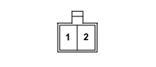

P040 SPEAKER IN REAR LEFT DOOR (LEFT REAR DOOR)
- Path
- Electrical equipment > 3 CONNECTORS > P VARIOUS CONSUMERS > P040 SPEAKER IN REAR LEFT DOOR > P040 SPEAKER IN REAR LEFT DOOR (LEFT REAR DOOR)
- Kind
- connector pinout (pin -> wire colour -> other end)
- Applies to
- all engines; all production periods
- Interactive page
- https://sloeber94.github.io/elrnDB-fPnd/en/#/169003573
Applies to: all engines; all production periods

Wiring | Colour |
|---|---|
- |
Pin | Cable | Destination | |||
|---|---|---|---|---|---|
Sec.. | Colour | Node | Connect. | Pin | |
1 | 1,5 | AG (light blue with yellow stripe) | 9 | ||
2 | 1,5 | LR (blue with red stripe) | 6 | ||